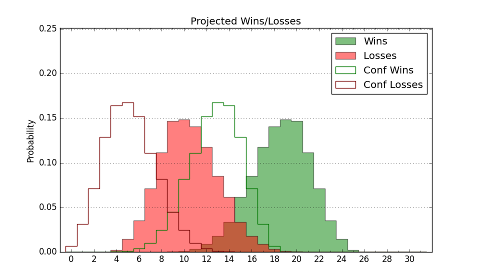

| Home | Game Probabilities | Conferences | Preseason Predictions | Odds Charts | NCAA Tournament |
| City: | Nashville, Tennessee | |
| Conference: | Atlantic Sun (1st)
| |
| Record: | 0-0 (Conf) 4-4 (Overall) | |
| Ratings: | Comp.: 2.4 (121st) Net: 2.6 (137th) Off: 100.7 (217th) Def: 98.0 (84th) SoR: 1.3 (151st) |
| Remaining | ||||||
|---|---|---|---|---|---|---|
| Date | Opponent | Win Prob | Pred. | |||
| 12/3 | @ Chattanooga (206) | 50.4% | W 74-73 | |||
| 12/5 | Southeast Missouri St. (303) | 89.6% | W 80-65 | |||
| 12/19 | @ Middle Tennessee (146) | 39.5% | L 70-73 | |||
| 1/2 | @ Jacksonville (214) | 53.5% | W 73-72 | |||
| 1/4 | @ North Florida (185) | 46.5% | L 80-81 | |||
| 1/9 | Queens (278) | 87.2% | W 80-66 | |||
| 1/11 | West Georgia (334) | 92.1% | W 78-61 | |||
| 1/16 | @ Bellarmine (295) | 69.9% | W 77-71 | |||
| 1/18 | Austin Peay (236) | 82.6% | W 74-63 | |||
| 1/23 | @ North Alabama (212) | 53.0% | W 74-73 | |||
| 1/25 | @ Central Arkansas (341) | 79.7% | W 76-66 | |||
| 1/30 | Eastern Kentucky (164) | 71.4% | W 79-72 | |||
| 2/1 | Bellarmine (295) | 88.8% | W 81-67 | |||
| 2/5 | @ West Georgia (334) | 77.5% | W 74-65 | |||
| 2/8 | @ Queens (278) | 66.8% | W 76-71 | |||
| 2/13 | Stetson (321) | 91.1% | W 84-67 | |||
| 2/15 | Florida Gulf Coast (142) | 68.4% | W 71-66 | |||
| 2/18 | @ Eastern Kentucky (164) | 42.3% | L 74-77 | |||
| 2/20 | North Alabama (212) | 79.3% | W 79-69 | |||
| 2/24 | @ Austin Peay (236) | 58.2% | W 70-68 | |||
| 2/26 | Central Arkansas (341) | 93.0% | W 80-62 | |||
| Previous | Game Score | |||||
| Date | Opponent | Win Prob | Result | Off | Def | Net |
| 11/4 | @Duquesne (216) | 53.9% | W 77-72 | 3.7 | 5.3 | 9.0 |
| 11/6 | @Arkansas (40) | 9.0% | L 60-76 | -11.2 | 8.2 | -3.0 |
| 11/9 | Wofford (145) | 69.0% | W 78-69 | 16.6 | -9.0 | 7.6 |
| 11/12 | Belmont (122) | 64.9% | L 79-80 | 3.3 | -12.4 | -9.1 |
| 11/17 | @Western Kentucky (111) | 31.5% | L 61-66 | -17.3 | 17.7 | 0.4 |
| 11/19 | @Kentucky (12) | 4.3% | L 68-97 | -0.8 | -13.2 | -14.0 |
| 11/24 | Jackson St. (350) | 94.2% | W 77-53 | -9.2 | 11.9 | 2.7 |
| 11/30 | @Alabama A&M (359) | 89.7% | W 82-44 | -6.8 | 31.8 | 24.9 |
| Stats & Trends | |||||
|---|---|---|---|---|---|
| Current | Day | Week | Month | Season | |
| Composite | 2.4 | +0.4 | +1.4 | +0.4 | +0.4 |
| Comp Rank | 121 | +7 | +18 | +8 | +8 |
| Net Efficiency | 2.6 | +0.7 | +2.4 | -- | -- |
| Net Rank | 137 | +8 | +29 | -- | -- |
| Off Efficiency | 100.7 | +0.8 | -0.8 | -- | -- |
| Off Rank | 217 | +11 | -1 | -- | -- |
| Def Efficiency | 98.0 | -0.1 | +3.1 | -- | -- |
| Def Rank | 84 | +1 | +49 | -- | -- |
| SoS Rank | 138 | +13 | -33 | -- | -- |
| Exp. Wins | 18.6 | +0.1 | +0.4 | -0.3 | -0.3 |
| Exp. Conf Wins | 12.8 | +0.1 | +0.2 | -0.5 | -0.5 |
| Conf Champ Prob | 39.5 | +2.1 | +4.2 | -11.2 | -11.2 |

| Advanced Stats | ||
|---|---|---|
| Stat | Value | Rank |
| Off Eff FG % | 0.488 | 220 |
| Off Ast Ratio | 0.158 | 110 |
| Off ORB% | 0.222 | 308 |
| Off TO Rate | 0.134 | 92 |
| Off FT Ratio | 0.225 | 352 |
| Def Eff FG % | 0.499 | 165 |
| Def Ast Ratio | 0.119 | 53 |
| Def ORB% | 0.274 | 161 |
| Def TO Rate | 0.158 | 129 |
| Def FT Ratio | 0.186 | 1 |